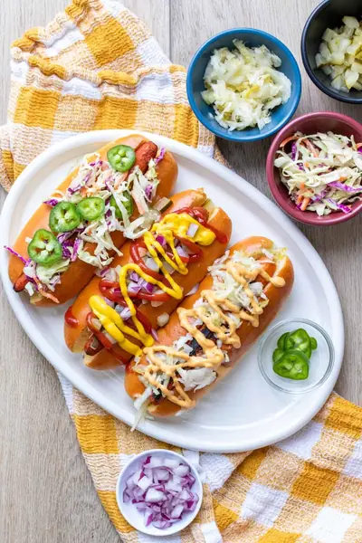

Game-Changing Vegan Carrot Dogs (Easy and Smoky!)

Ingredients
- 6 full size carrots
- oil (optional (skip if oil free)
- 1 cup veggie broth (low sodium if needed)
- ¼ cup tamari (or soy sauce if not gluten-free)
- 2 tablespoons apple cider vinegar
- 2 ½ teaspoons maple syrup
- 2 teaspoons paprika
- 1 ½ teaspoons liquid smoke
- 1 teaspoon celery seed
- 1 teaspoon garlic powder
- 1 teaspoon onion powder
- ½ teaspoon sea salt (optional (see note)
- ketchup
- mustard
- relish
- pickles
- sauerkraut
- pickled onions
- chopped onion
- jalapenos
- cheese
- cheese sauce
- chili
- coleslaw
Steps
- Cut the ends off of the carrots and shape into hot dog like shapes using your vegetable peeler if preferred for aesthetics.
- Boil the carrots for about 10 minutes until you stick a fork in them and it goes in but still has some give. I put the carrots in water over medium high heat (before the water was boiling) and it took 10 minutes total.
- While boiling, mix all marinade ingredients in a deep dish or plastic Ziploc bag.
- When carrots are done boiling, run them under cold water then add them to the marinade. Marinate for at least 30 minutes but overnight is best for optimum flavor.
- Cook the carrot dogs on a pan over medium high heat until browning on the outside, about 3-5 minutes. Make sure to move them around so they char on all sides.
- You can also BBQ them on a grill, about 5-7 minutes until charred on all sides. I like to baste them with the marinade as they cook.
- You can also roast them in the oven at 400 degrees F / 205 C. For this option you can skip boiling them and simply put them in the oven with marinade in a foil covered baking dish. Bake for about 20 minutes, then uncover and bake for another 10 until you put a fork in them and they still have some give.
- Top with what you prefer and enjoy!
Recipe by Anjali Shah, from The Picky Eater. Saved here for personal use; the original has the full notes, tips and photos. Open original